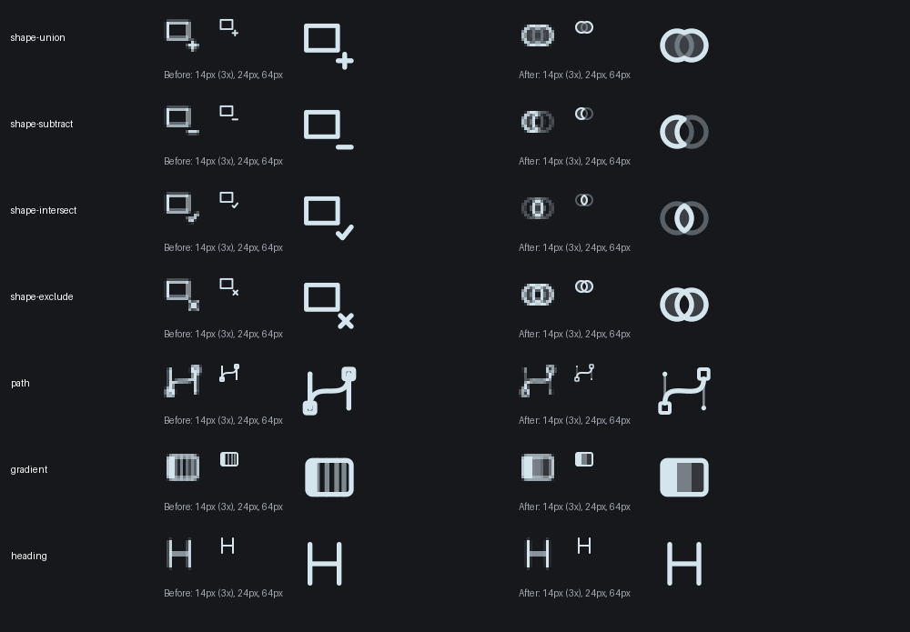
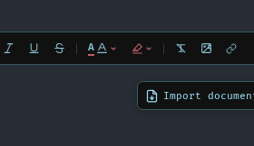
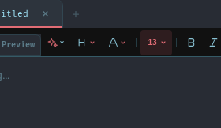
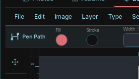
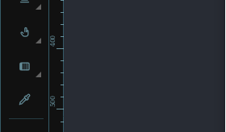

Icon visual fixes
Complete interface review · Icon suite
Original owner choices are unchanged. These fixes correct their geometry and integration. Shape Intersect now uses a proper overlap result, so it can replace the old guarded glyph. Calendar Refresh and document-close keep their old glyphs.
Boolean operations and small-size geometry
The four operations now emphasize their actual result over two operand circles. The board compares the previous SVG candidates with the corrected vectors at 14 px (enlarged 3×), 24 px and 64 px. The earlier rectangle/check Intersect candidate was held out of the application.

Actual Combine Shapes menu · Actual Intersect selection control
Text color
Replace the duplicate A, preserve the single accent underline and keep the dropdown arrow.
Before this fix
After, actual interface
Heading
Center the H within its 24-unit viewBox; retain the separate disclosure arrow.
Before this fix
After, actual interface
Pen Path
Separate the tangent handles from the anchor squares and use thinner secondary detail at small sizes.
Before this fix
After, actual interface
Gradient
Replace crowded stripes with three broad currentColor bands. Alpha supplies the tonal steps.
Before this fix
After, actual interface
Verification and limits
The final authenticated app capture passed 83 states with 89 selected IDs observed, zero page JavaScript errors and no observed SVG containment failures. 174 focused checks pass (126 editor regressions, 12 document checks and 36 selected-control checks); 7 tests that invoke Node were deselected under the workstation runtime policy. All 802 SVGs render within bounds. The gallery passes 40 browser checks and all 19 color trials, including the repaired 390 px header layout. Twenty-seven applied icons remain hidden or conditional in this fixture; external provider workflows and physical touch were not exercised.